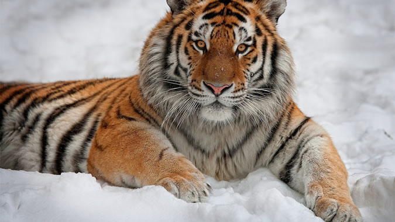
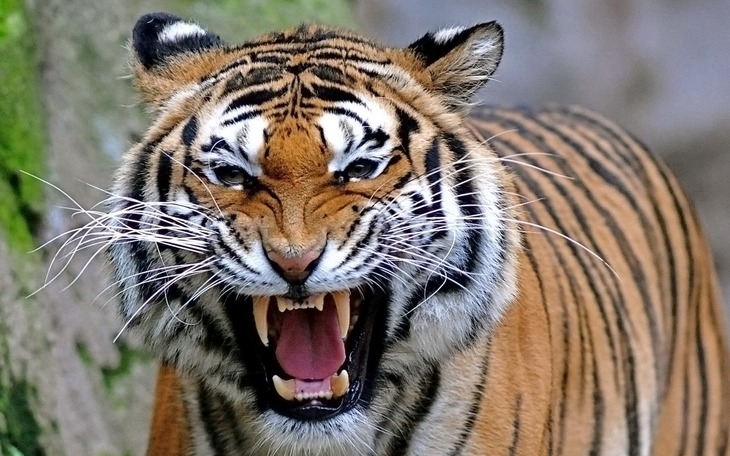

Тигр– это хищник из семейства кошек, являющийся одним из главных представителей рода Panthera. Значение слова «тигр» дословно переводится с древне-греческого языка как «быстрый, острый». Один из крупнейших хищников, тигр уступает размерами лишь медведям – белому и бурому.


Из известных девяти подвидов тигров сохранились лишь шесть: амурский тигр, тигр бенгальский, малайский, суматранский, индокитайский и южнокитайский тигр. Что касается яванского, балийского и каспийского тигров – эти подвиды были полностью истреблены человеком. Большую часть общей численности особей тигров, составляющую от 4000 до 6500 экземпляров, представляют бенгальские тигры – их доля достигает 40% от общей популяции. В прошлом веке тигр был внесен в охранные документы многих стран. Также он внесен в Красную книгу Российской Федерации и в Красную Книгу Международного Союза Охраны Природы. Начиная с 2013 года, был введен запрет на охоту на тигров по всему миру.
Что касается волосяного покрова, то у северных представителей вида он более густой и высокий, нежели у южных. Окрас тигров варьируется от рыже-кориченевых оттенков до красноватых. Область живота и груди обычно окрашена в светлые тона. Коричневые, а иногда черные, поперечные полосы опоясывают тело тигра, спускаясь острыми окончаниями к его животу. На задней части туловища зверя полос обычно больше – начинаясь на крестце, полосы спускаются по направлению бедра, заканчиваясь либо посередине, либо доходят до верхней части голени и спускаются до внутренней стороны ноги. Большая часть морды имеет светлый окрас – черные пятна видны лишь в области нижней губы и уголков рта. Сложный рисунок, образованный короткими черными поперечными полосами, украшает лоб, затылок и теменную часть головы тигра. Длинная черная полоса выходит из-за уха зверя, спускаясь по шее до самого горла. Уши тигра спереди белые, а сзади черные, с белым пятном в верхней их части. Боковые стороны головы и баки тигра исчерчены черными полосами по белой шерсти.